|
Computers
- Main Menu |
Personal Computers ::
Atari 400 and 800 Computers
::
Peripherals
|
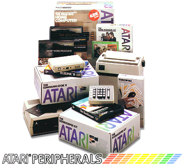
|
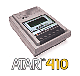 |
The Atari 410 came in two variations,
but both had identical specifications. Atari cassette drives
had a unique double-track feature, enabling sound and data to be
recorded and transmitted. This was used in such programs as
the Atari language modules and Invitation to programming series,
utilising a narrator while the program ran on screen. The
Atari 410 used the advanced Serial I/O interface (SIO), enabling
easy connection to the computer. Originally designed
specifically for the 410, it was decided to use it on all Atari
8-Bit peripherals. |
| |
|
|
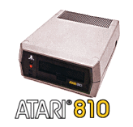 |
Atari's first disk drive product, the
810 provided fast and efficient storage and data retrieval for the
new 8-Bit line of computers. The unit is large (also
including a disk-drive controller inside), but not unusually so
for the time. The single sided device enabled up to 88K of
data storage on each side of a single 5.25" floppy disk. Up
to 4 810's could be daisy-chained via the SIO system. |
|
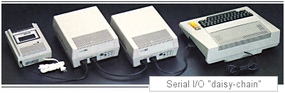 |
|
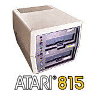 |
The Atari 815 was Atari's first true
double density disk drive. It was also the largest drive
system produced, and would only see a very limited commercial
release. Supporting two drive mechanisms, ach unit cost
approx. $1,500.00! |
| |
|
|
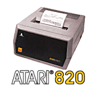 |
A quick and easy solution to printing,
the 820 plugged directly into a 400 or 800 via the SIO without the
need for any drivers or printer controllers. It produced a 40
column output. A typically large device for the time,
there was no mistaking the unit was working, as that's about all
you could hear while it printed! |
| |
|
|
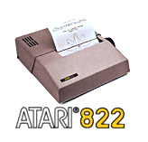 |
A small and versatile thermal printer,
the 822 from Atari was very popular. A 40 column printer
with a retail price of Approx. $449.00 |
| |
|
|
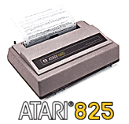 |
A rebranded Centronics 737, the Atari
822 was a small and competent 9-Pin dot-matrix 80 column printer.
Unlike its smaller brother, the 820, the 825 required the 850
interface for use with the Atari 400 or 800 computer because it
uses the Centronics printer port, and not the Atari SIO system. |
| |
|
|
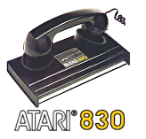 |
Atari's first modem product, this 300
baud unit was based on the commonly used "Acoustic coupler"
design, whereby the phone receiver is physically placed inside the
modem via 2 rubber holders, or couplers. This unit required
the 850 interface to communicate to the computer. |
| |
|
|
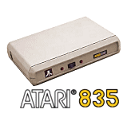 |
Although the 830 was functional, the
acoustic coupler design had many flaws. It wasn't long until
a self-contained modem device was available, and the Atari version
was the 835 direct connect modem. Again, a 300 baud device,
it was more efficient and didn't require the 850 interface. |
| |
|
|
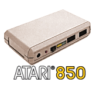 |
The Atari 850 served as the middle-man
for any device that couldn't directly connect to the Atari 400 or
800 computer. It had 4 x serial ports (RS-232C) and 1 x
Centronics (8-Bit Parallel) port. Although a "must-have"
product for any serious user, Atari decided to use the female DB-9
serial port and the female DB-15 Centronics ports on the 850.
Both ports chosen by Atari were not adopted as the industry
standard, with the male DB-9 used for Serial and the male DB-25
Centronics used for Parallel, even to this day! |
| |
|
|
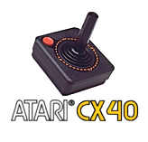 |
Probably the closest and most
recognisable symbol next to the Fuji, the CX-40 became the
standard choice for gamers in the late 70's and 80's. With
possibly over 30 million produced, the CX-40 was the first
commercially successful joystick design, and you
could even buy an officially made repair kit if you played too
many hours of Star Raiders! |
| |
|
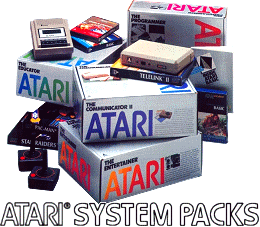
|
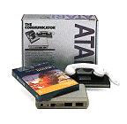 |
The Communicator - Came with Telelink
One manual and program cartridge, 830 Modem and 850 Interface. |
| |
|
|
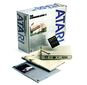 |
The Communicator II - with the direct
connect 835 modem and Telelink II program cartridge. |
| |
|
|
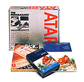 |
The Programmer -with the basic
programming guide, reference book and Atari Basic program
cartridge. |
| |
|
|
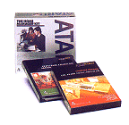 |
The Home Manager - with Home Filing
Manager, Family Finances and Timewise programs. |
| |
|
|
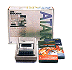 |
The Educator - with Atari 410 program
recorder, Atari Basic and the States and Capital program on
cassette. |
| |
|
|
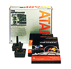 |
The Entertainer - with 2 x CX-40
joysticks, Pac-Man, and the award winning Star Raiders game
cartridges. |
| |
|
|
|
Pilot - Atari produced many fine
programs for the 400 and 800 range of computers. Many were
geared for education, and among these were the Pilot series, which
came in a full "Educator" package for the classroom, and a
consumer version for the home. Many of the earlier Atari
programs were produced to an incredible high quality, with plastic
binders, audio tapes and easy to read manuals and reference
guides. |
 |
|